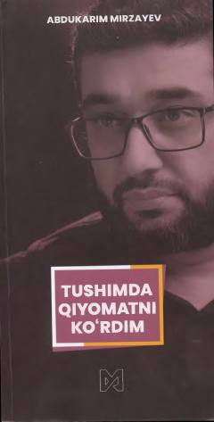

TQInsonni hayot va oxir haqida mushohada qilishga undovchi ibratli hikoyalar to'plami.
Mazkur kitobda insonni hayot va oxirat haqida fikrlashga undovchi ta'sirli va ibratli hikoyalar jamlangan. Asar qahramonining boshidan kechirgan og'ir sinovlari va hayotiy voqealar orqali kitobxonga chuqur ma'naviy saboqlar beriladi.